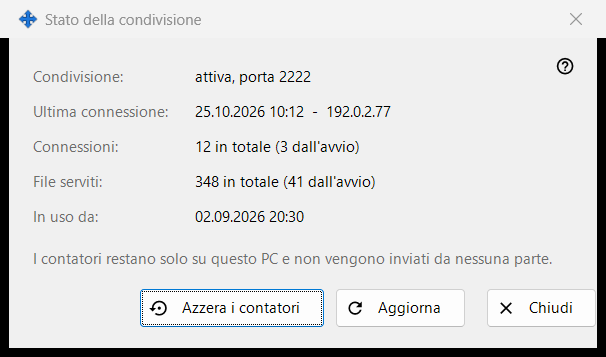
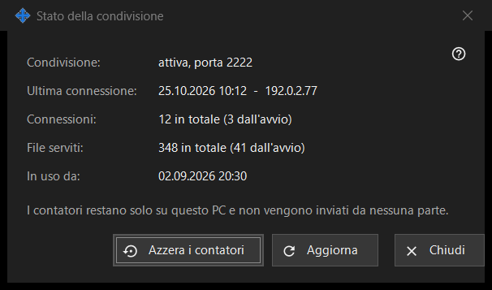

Stato della condivisione
Scopo
Mostra lo stato attuale della condivisione e i suoi semplici contatori. Si apre dal collegamento «Statistiche» della finestra principale.


In questo ordine
- Leggi lo stato in alto.
- Controlla l'ultima connessione, il numero di connessioni e i file serviti.
- Premi «Aggiorna» per avere nuovi valori.
- Premi «Azzera i contatori» per ricominciare il conteggio.
- Premi «Chiudi».
Gli elementi
Stato
«Condivisione:» indica se la condivisione è in funzione e su quale porta, oppure che è disattivata, oppure che il worker non è disponibile. «In uso da:» mostra quando la condivisione è stata avviata.
Contatori
«Ultima connessione:» mostra l'ora dell'ultimo telefono, oppure «mai». «Connessioni:» e «File serviti:» mostrano il totale e, tra parentesi, il numero dall'ultimo avvio. I contatori restano solo su questo PC e non vengono inviati da nessuna parte.
Aggiornare e azzerare
«Aggiorna» legge di nuovo i valori dal server. «Azzera i contatori» chiede prima conferma: i valori precedenti non si possono ripristinare. Se l'azzeramento non riesce, il pulsante mostra «Azzeramento non riuscito». «Chiudi» esce dalla finestra.
Impostazioni del gestore · Impostazioni condivisione SFTP · Impostazioni server di scambio